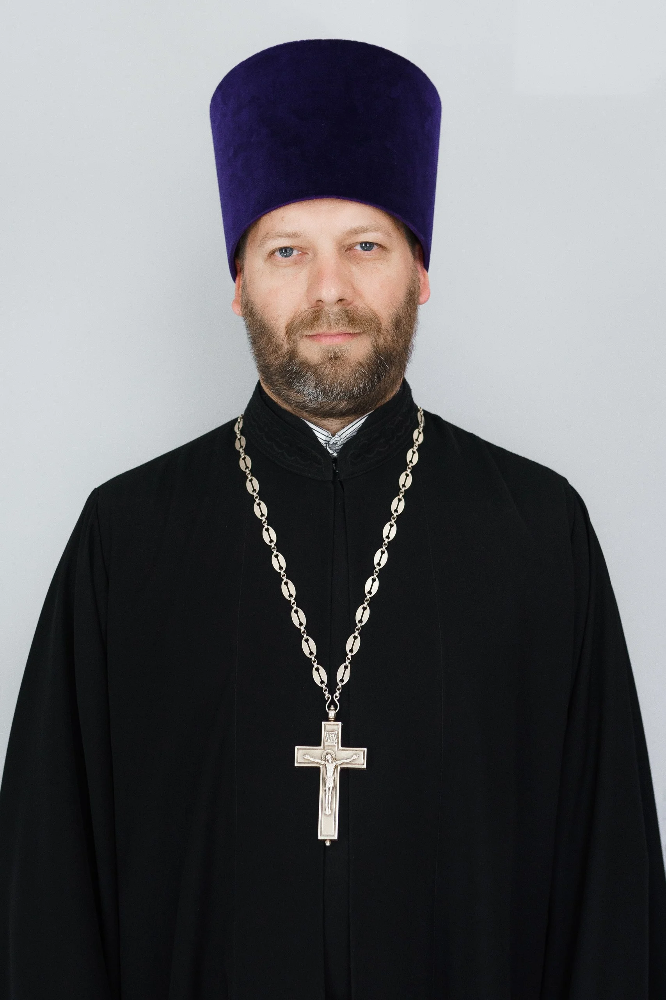

Главная / Медведев Филипп, иерей
Медведев Филипп, иерей

Указан в действующем официальном каталоге клириков благочиния. Биографические сведения и места служения будут дополнены представителем прихода.
Место служения
Для обращения выберите приход в разделе контактов.
Как обратиться
Договориться о беседе можно через приход. Личные контакты без согласия священнослужителя не публикуются.
Контакты